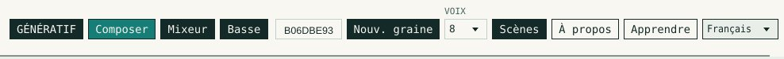
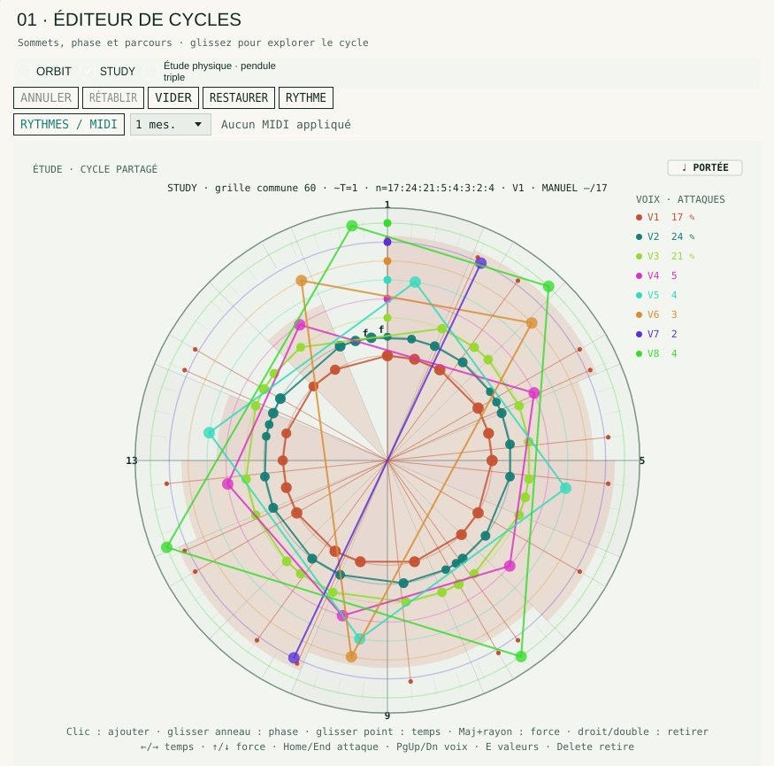
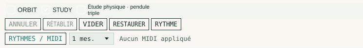
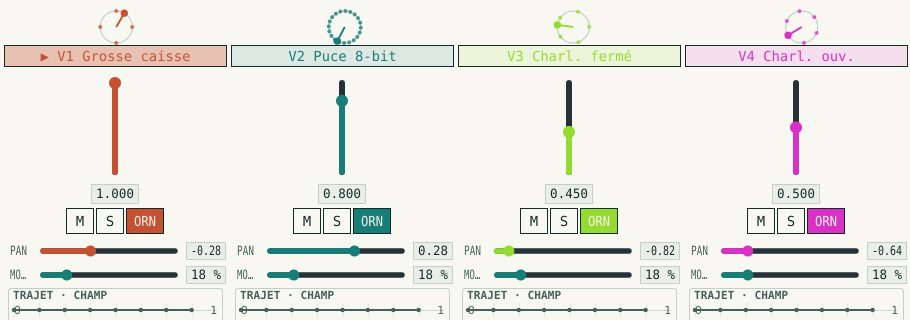
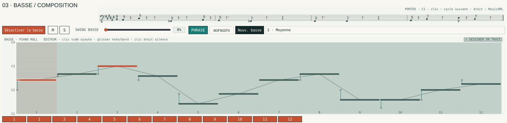
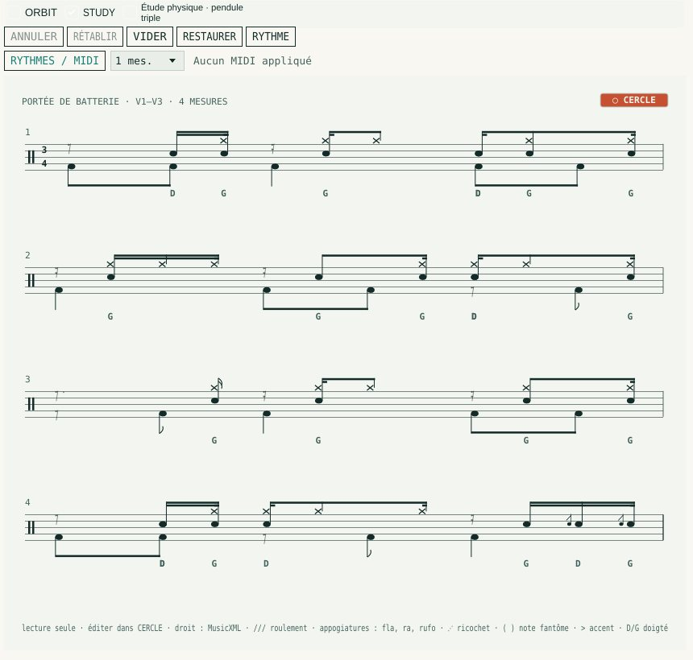

Huit étapes pour jouer, écrire et garder un rythme dans Batruc. Les noms entre guillemets sont ceux de l'interface.
1. Commencer · la graine
Ouvrez Batruc et cliquez sur « Jouer ». La graine — le code de huit caractères dans l'en-tête — écrit toute la composition : figures de grosse caisse, caisse claire et charleston, la tonalité de la basse et la forme en sept cycles.
« Nouv. graine » tire une autre composition.
Tapez un code dans le champ de la graine et appuyez sur Entrée pour revenir à une graine connue.
« VOIX » choisit combien de voix jouent.

2. RYTHME ou GÉNÉRATIF
Le bouton de mode, dans l'en-tête, alterne les deux façons de jouer.
« RYTHME » joue exactement ce qui est écrit : cellules, MIDI, figures. Rien n'agit en cachette.
« GÉNÉRATIF » ajoute les masques du champ, les lois d'intensité et la forme.
« GÉN », dans la barre du bas, règle la profondeur du GÉNÉRATIF (30 % au départ).
3. Lire et modifier dans le Study
Dans « Composer », « STUDY » montre le cycle partagé : chaque voix est un anneau, chaque point une attaque.
Cliquez sur une partie vide d'un anneau pour créer une attaque ; clic droit ou double-clic sur le point la retire.
Faites glisser un point pour déplacer cette attaque seule ; faites glisser une partie vide de l'anneau pour décaler tout le stem.
Maj + glisser vers l'intérieur ou l'extérieur règle la force.
« ANNULER », « RÉTABLIR », « VIDER » et « RESTAURER » agissent sur la voix sélectionnée.

4. D'autres figures
Le bouton « RYTHME » du Study ouvre le menu d'écriture de la voix sélectionnée.
Redistribution euclidienne des attaques de la cellule.
« Écrire les figures du pendule » ou « d'un autre modèle » : billard, Lissajous, Fourier, courbes roulantes.
« RYTHMES / MIDI » apporte un rythme du catalogue (Groove MIDI Dataset) ou un MIDI à vous.

5. La caisse claire
Les ornements sont gardés sur la note : une seule marque par attaque, et les frappes naissent au moment de jouer.
Dans le menu « RYTHME » du Study : « Ornementer (caisse claire) », « Groove de caisse claire (genre) » — frevo, maracatu, baião — et « Microtiming mesuré ».
Dans le « Mixeur », le bouton « ORN » de chaque stem alterne entre le jeu simple et la caisse claire complète.

6. La basse et la tonalité
La graine choisit une tonalité — douze toniques et dix modes — et la basse suit la composition.
Dans l'onglet « Basse », « PHRASE » (activé au départ) donne à la basse une voix propre : progression de degrés, réponses et notes de passage.
La portée de basse, sur 16 temps, est au-dessus du graphique ; un clic droit exporte le MusicXML.
Dans le « Mixeur », « PERC. DANS LE TON » accorde la percussion sur la tonalité de la graine (désactivé au départ).

7. La portée de batterie
Dans le Study, la puce « ♩ PORTÉE ⇄ ◯ CERCLE » remplace le cercle par la portée de batterie.
La portée montre les signes d'ornement et le doigté (D/G).
Clic droit : « Exporter MusicXML (batterie)… », pour l'ouvrir dans MuseScore ou un autre éditeur de partition.

8. Scènes et enregistrement
Gardez des versions et enregistrez ce que vous avez joué.
« Scènes » garde des versions dans la session et exporte ou ouvre un fichier .batruc.txt.
« REC » enregistre le master stéréo en WAV 24 bits ; la case à côté limite la durée (5 min au départ).
« Apprendre » ouvre le LEARN dans l'app ; « À propos » montre la version, les crédits et la licence.
Règle centrale
La génération écrit ; elle ne filtre pas en cachette. Ce que le modèle écrit reste modifiable, et le mode RYTHME joue exactement ce qui est écrit.